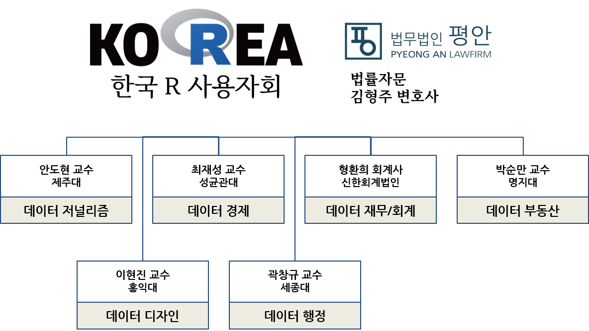

한국 알(R) 사용자회 소개
한국 알(R) 사용자회는 2022년 2월 설립된 비영리법인입니다. BitStat 오픈 통계 패키지를 비롯하여 데이터 사이언스 전자책 콘텐츠 개발, 서울 R 미트업과 한국 R 컨퍼런스를 비롯하여 나눔교육운동본부, 서울교육청 사회단체 교육활동, 대전관광공사 민간분야 과학문화활동 사업 등을 통해 디지털 불평등 해소와 오픈 과학기술을 보급하여 더 나은 세상을 함께 만들어가고 있습니다.
커뮤니티 네트워크

한국 R 사용자회
한국 R 사용자회는 오픈 통계 패키지 개발, 오픈 데이터 패키지 개발, 오픈 콘텐츠 제작과 오픈 교육/컨설팅 등 통해 과학기술 발전과 디지털 불평등 해소를 위해 많은 분들이 함께 하시고 계십니다.
한국 R 사용자회는 데이터 저널리즘과 데이터 경제 분과를 중심으로 운영되고 있으며 법무법인 평안 소속 김형주 변호사님이 한국 R 사용자회 고문 변호사로 함께 하시고 계십니다.

연락처
다음 전자우편으로 연락주세요. admin@bit2r.com